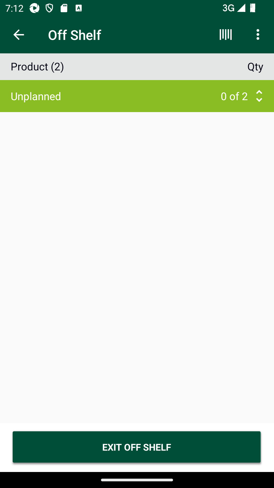
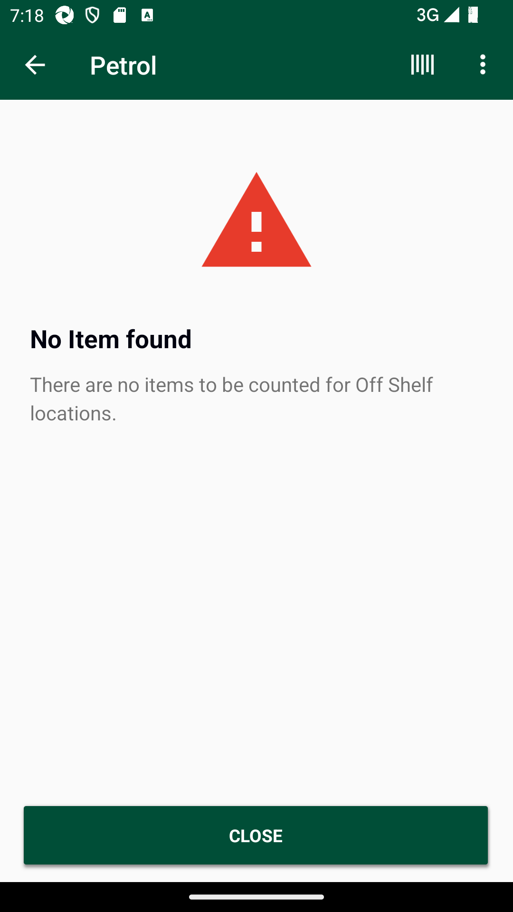
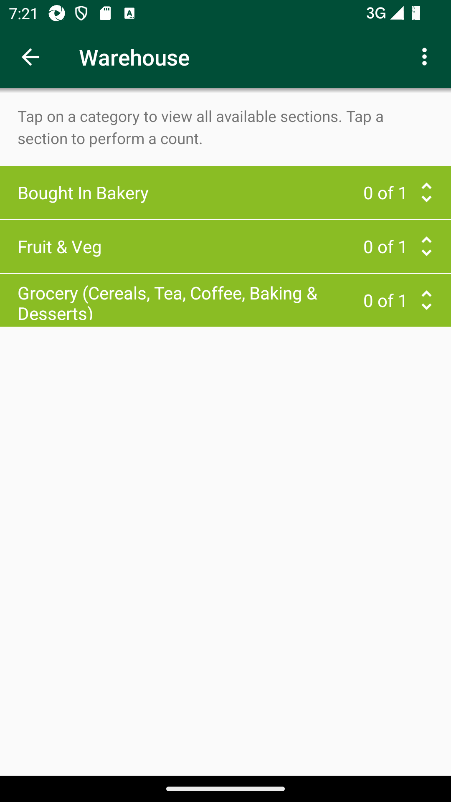
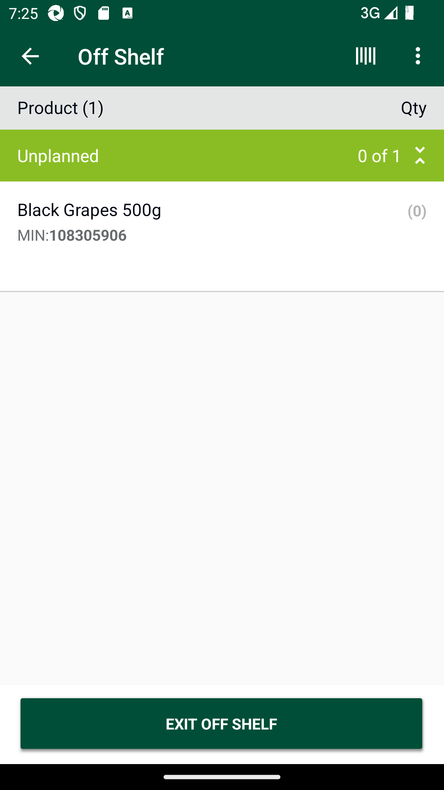
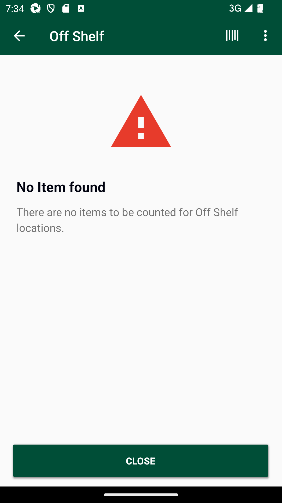

-
GLH Negative prompt scenarios
12:14:56 PM / 00:44:41:714 Fail
GLH Negative prompt scenarios
10.14.2024 12:14:56 PM 10.14.2024 12:59:38 PM 00:44:41:714 · #test-id=1@Newglh_negative_promptPassCreate SOH for itemsPassCreate SOH for itemsGiven I create SOH for the Negative Prompt "xxwmm.supplychain.freshcounts.eeeeeeeeee" "promptednegatives/pending/" "Input" "nb_prompted_count_getRunTime.dat"PassGenerate Google Access Token. This is a Pre-requisite for all Counts modulesPassGenerate Google Access Token. This is a Pre-requisite for all Counts modulesGiven request is made to capture access token and post endpoint for user v2 for "8"Then I Verify the Response Code for the following "432435" is 200And I get the field value for the field "access_token"And Get the generated Access Tocken for SMA app Login ServicePassDelete GLH Storewalk from ServicePassDelete GLH Storewalk from ServiceAnd Get the generated Access Tocken for SMA app Login ServiceGiven Get request is made to Get storewalks service for current dateAnd Get Operation perform on service requestThen Verify Get storewalks service response for current dateThen Delete request is made to Delete GLH storewalk for store id "8"PassTO CHANGE THE DEVICE TIMINGS AS REQUIREDPassTO CHANGE THE DEVICE TIMINGS AS REQUIREDGiven I send the time "07" and mins "00" and meridiem "am" and current date in listThen I Change timeThen I Change datePassSMA-22779_To verify API response is 201 Created in Create Walkitem API when multiple product id is passed in request body asynchronously.PassSMA-22779_To verify API response is 201 Created in Create Walkitem API when multiple product id is passed in request body asynchronously.And Get the generated Access Tocken for SMA app Login ServiceGiven Post request is made to Create storewalk for negative prompt for store id "8" and type "GapsHighsLows"And Post Operation perform on service requestThen Verify Create storewalk service responseGiven Post request is made to Create walkitem service for store id "8" and multiple product ids "108305906","108317675"And Post Operation perform on service requestThen Verify Create walkitem service response is 201PassSMA-22779_To verify multiple walkitems are created successfully in walkitem table through Create Walkitem API when 10 product is are passed at the given time for one walk_id.PassSMA-22779_To verify multiple walkitems are created successfully in walkitem table through Create Walkitem API when 10 product is are passed at the given time for one walk_id.And Get the generated Access Tocken for SMA app Login ServiceGiven Post request is made to Create storewalk for negative prompt for store id "8" and type "GapsHighsLows"And Post Operation perform on service requestThen Verify Create storewalk service responseGiven Post request is made to Multiple product Create walkitem service for store id "8" and 10 product ids "108305906","108317675","111203273","111392158",""," "," "," "," "," " And Post Operation perform on service requestThen Verify Create walkitem service response is 201PassSMA-22779_To verify Create walkitem API through exceeded limit exception when we pass more than 10 product ids in the request body.PassSMA-22779_To verify Create walkitem API through exceeded limit exception when we pass more than 10 product ids in the request body.And Get the generated Access Tocken for SMA app Login ServiceGiven Post request is made to Create storewalk for negative prompt for store id "8" and type "GapsHighsLows"And Post Operation perform on service requestThen Verify Create storewalk service responseGiven Post request is made to Multiple product Create walkitem service for store id "8" and more than product ids "108305906","108317675","111203273","111392158",""," "," "," "," "," "," " And Post Operation perform on service requestThen Verify Error message in Create walkitem service responsePassSMA-22779_To verify section is created when multiple walkitems are created using Create Walkitem API by passing multiple product id in request body.PassSMA-22779_To verify section is created when multiple walkitems are created using Create Walkitem API by passing multiple product id in request body.And Get the generated Access Tocken for SMA app Login ServiceGiven Post request is made to Create storewalk for negative prompt for store id "8" and type "GapsHighsLows"And Post Operation perform on service requestThen Verify Create storewalk service responseGiven Post request is made to Multiple product Create walkitem service for store id "8" and 10 product ids "108305906","108317675","111203273","111392158",""," "," "," "," "," " And Post Operation perform on service requestThen Verify Create walkitem service response is 201And Get request is made to Get storewalk service for store id "8"Then Get Operation perform on service requestThen Verify Get storewalk service responseAnd Get request is made to Get section service for store id "8"Then Get Operation perform on service requestAnd Verify Get section service responsePassSMA-22779_To verify whether it allows to create walkitem for different store locations if same products are already processed for other store locationPassSMA-22779_To verify whether it allows to create walkitem for different store locations if same products are already processed for other store locationAnd Get the generated Access Tocken for SMA app Login ServiceGiven Post request is made to Create storewalk for negative prompt for store id "8" and type "GapsHighsLows"And Post Operation perform on service requestThen Verify Create storewalk service responseGiven Post request is made to Multiple product Create walkitem service for store id "8" and 10 product ids "108305906","108317675","111203273","111392158",""," "," "," "," "," " And Post Operation perform on service requestThen Verify Create walkitem service response is 201And Get the generated Access Tocken for SMA app Login ServiceGiven Post request is made to Create storewalk for negative prompt for store id "77" and type "GapsHighsLows"And Post Operation perform on service requestThen Verify Create storewalk service responseGiven Post request is made to Multiple product Create walkitem service for store id "77" and 10 product ids "108305906","108317675","111203273","111392158",""," "," "," "," "," " And Post Operation perform on service requestThen Verify Create walkitem service response is 201PassSMA-22779_To verify create walkitem response code:400,401 with incorrect headerPassSMA-22779_To verify create walkitem response code:400,401 with incorrect headerAnd Get the generated Access Tocken for SMA app Login ServiceGiven Post request is made to Create storewalk for negative prompt for store id "8" and type "GapsHighsLows"And Post Operation perform on service requestThen Verify Create storewalk service responseGiven Post request is made to Create walkitem service for store id "8" and product id "108305906"And Post Operation perform on service request with Incorrect headerAnd Verify service response code is 400,401PassSMA-22779_To verify create walkitem response code:400,401 with incorrect access tokenPassSMA-22779_To verify create walkitem response code:400,401 with incorrect access tokenAnd Get the generated Access Tocken for SMA app Login ServiceGiven Post request is made to Create storewalk for negative prompt for store id "8" and type "GapsHighsLows"And Post Operation perform on service requestThen Verify Create storewalk service responseAnd Get Incorrect access tokenGiven Post request is made to Create walkitem service for store id "8" and product id "108305906"And Post Operation perform on service requestAnd Verify service response code is 400,401PassSMA-22779_To verify create walkitem response code:401 with blank store idPassSMA-22779_To verify create walkitem response code:401 with blank store idAnd Get the generated Access Tocken for SMA app Login ServiceGiven Post request is made to Create storewalk for negative prompt for store id "8" and type "GapsHighsLows"And Post Operation perform on service requestThen Verify Create storewalk service responseAnd Get Incorrect access tokenGiven Post request is made to Create walkitem service for store id "77" and product id "108305906"And Post Operation perform on service requestAnd Verify service response code is 401PassSMA-22779_To verify create walkitem response code:400 with blank request payloadPassSMA-22779_To verify create walkitem response code:400 with blank request payloadAnd Get the generated Access Tocken for SMA app Login ServiceGiven Post request is made to Create storewalk for negative prompt for store id "8" and type "GapsHighsLows"And Post Operation perform on service requestThen Verify Create storewalk service responseGiven Post request is made to Create walkitem service without payload for store id "8"And Post Operation perform on service requestAnd Verify service response code is 400PassSMA-22779_To verify create walkitem response code:400,401 with incorect request payloadPassSMA-22779_To verify create walkitem response code:400,401 with incorect request payloadAnd Get the generated Access Tocken for SMA app Login ServiceGiven Post request is made to Create storewalk for negative prompt for store id "8" and type "GapsHighsLows"And Post Operation perform on service requestThen Verify Create storewalk service responseGiven Post request is made to Create walkitem service with invalid payload for store id "8" and product id "108305906"And Post Operation perform on service requestAnd Verify service response code is 400PassSMA-22771_To verify the list of "Prompted Negative Products" are visible on offshelf location in AM GLH across store mobile app without any captures.PassSMA-22771_To verify the list of "Prompted Negative Products" are visible on offshelf location in AM GLH across store mobile app without any captures.When I enter Username and Password for SMA Manager userAnd I click on login button for SMAThen I click on 'stockMngmtText' on page 'HomePagePO_New'Then I click on "Shop Floor - Gap Scan"Then I click on Fixture ScanAnd I verify products list is not displayed in fixture locationThen I click on Back buttonThen I click on OffShelfAnd I verify Prompted Negative products are displayed in Offshelf locationFailSMA-22771_To verify For GLH create Items with reason as ‘NegativeStock’ to appear the records in offshelf in GLH.FailSMA-22771_To verify For GLH create Items with reason as ‘NegativeStock’ to appear the records in offshelf in GLH.When I enter Username and Password for SMA Manager userAnd I click on login button for SMAThen I click on 'stockMngmtText' on page 'HomePagePO_New'Then I click on "Shop Floor - Gap Scan"Then I click on OffShelfAnd I verify Prompted Negative products are displayed in Offshelf locationAnd Get the generated Access Tocken for SMA app Login ServiceGiven Get request is made to Get storewalks service for current dateAnd Get Operation perform on service requestThen Verify Get storewalks service response for current date for store id "8"Given Get request is made to Get storewalk service for Negative prompt product and store id "8"And Get Operation perform on service requestThen Verify Get storewalks service response for Negative prompt and store id "8"com.morrisons.common.action.Hook.afterScenario(io.cucumber.java.Scenario)
And I verify GLH create Items with reason as ‘NegativeStock’ in GetStorewalks service responseStep skippedPassSMA-22771_To verify if "Prompted Negative Products" are not captured by store colleague, then status across warehouse location for respective department > section is Offshelf pending.PassSMA-22771_To verify if "Prompted Negative Products" are not captured by store colleague, then status across warehouse location for respective department > section is Offshelf pending.When I enter Username and Password for SMA Manager userAnd I click on login button for SMAThen I click on 'stockMngmtText' on page 'HomePagePO_New'Then I click on "Shop Floor - Gap Scan"Then I click on OffShelfAnd I verify Prompted Negative products are displayed in Offshelf locationThen I click on Back buttonThen I click on WareHouseAnd I verify department section status is Offshelf pendingAnd I click on Back ButtonFailSMA-22771_To verify once negative walkitems are created and displayed at offshelf location then the respective departments are also visible followed by section across Warehouse location.FailSMA-22771_To verify once negative walkitems are created and displayed at offshelf location then the respective departments are also visible followed by section across Warehouse location.When I enter Username and Password for SMA Manager userAnd I click on login button for SMAThen I click on 'stockMngmtText' on page 'HomePagePO_New'Then I click on "Shop Floor - Gap Scan"Then I click on OffShelfAnd I verify Prompted Negative products are displayed in Offshelf locationThen I get Category name from Offshelf locationThen I click on Back buttonThen I click on PetrolAnd I verify products are displayed in Petrol locationcom.morrisons.common.action.Hook.afterScenario(io.cucumber.java.Scenario)
Then I get Category name from Petrol locationStep skippedThen I click on Back buttonStep skippedThen I click on WareHouseStep skippedAnd I verify products are displayed in Warehouse locationStep skippedFailSMA-22771_To verify Groups and section displayed at Warehouse location on UI matches with Get storewalk Service response.FailSMA-22771_To verify Groups and section displayed at Warehouse location on UI matches with Get storewalk Service response.When I enter Username and Password for SMA Manager userAnd I click on login button for SMAThen I click on 'stockMngmtText' on page 'HomePagePO_New'Then I click on "Shop Floor - Gap Scan"Then I click on OffShelfAnd I verify Prompted Negative products are displayed in Offshelf locationThen I click on Back buttonThen I click on WareHouseAnd I verify products are displayed in Warehouse locationThen I get Department name from Warehouse locationAnd Get the generated Access Tocken for SMA app Login ServiceGiven Get request is made to Get storewalks service for current dateAnd Get Operation perform on service requestThen Verify Get storewalks service response for current date for store id "8"Given Get request is made to Get storewalk service for store id "8"And Get Operation perform on service requestThen Verify Get storewalks service response for store id "8"com.morrisons.common.action.Hook.afterScenario(io.cucumber.java.Scenario)
And I verify Warehouse Group dept and section on UI and service matchesStep skippedFailSMA-22771_To verify user is able to capture "Prompted Negative Products" as GAP in on-shelf location then respective product is getting removed from Off shelf location.FailSMA-22771_To verify user is able to capture "Prompted Negative Products" as GAP in on-shelf location then respective product is getting removed from Off shelf location.When I enter Username and Password for SMA Manager userAnd I click on login button for SMAThen I click on 'stockMngmtText' on page 'HomePagePO_New'Then I click on "Shop Floor - Gap Scan"Then I click on OffShelfAnd I verify Prompted Negative products are displayed in Offshelf locationThen I get Category name and Min values from Offshelf locationThen I click on Back buttonThen I click on Fixture ScanAnd I click on barcode entry ButtonThen I Enter barcode number in fixture scanAnd I click on GAP buttonAnd I choose the plan from popup if multiple records presentAnd I will capture the product name from view listThen I verify the if it is GAPThen I click on Back buttonThen I click on OffShelfAnd I verify Scan product in fixture is removed from offshelf locationcom.morrisons.common.action.Hook.afterScenario(io.cucumber.java.Scenario)
PassSMA-22771_To verify user is able to capture "Prompted Negative Products" as LOW in on-shelf location then respective product is getting removed from Off shelf location.PassSMA-22771_To verify user is able to capture "Prompted Negative Products" as LOW in on-shelf location then respective product is getting removed from Off shelf location.When I enter Username and Password for SMA Manager userAnd I click on login button for SMAThen I click on 'stockMngmtText' on page 'HomePagePO_New'Then I click on "Shop Floor - Gap Scan"Then I click on OffShelfAnd I verify Prompted Negative products are displayed in Offshelf locationThen I get Category name and Min values from Offshelf locationThen I click on Back buttonThen I click on Fixture ScanAnd I click on barcode entry ButtonThen I Enter barcode number in fixture scanAnd I click on COUNT buttonAnd I enter quantity "4" for fixture and warehouseAnd I choose the plan from popup if multiple records presentAnd I will capture the product name from view listThen I verify the if it is COUNTThen I click on Back buttonThen I click on OffShelfAnd I verify Scan product in fixture is removed from offshelf locationFailSMA-22771_To verify user is able to capture "Prompted Negative Products" as HIGH in on-shelf location then respective product is getting removed from Off shelf location.FailSMA-22771_To verify user is able to capture "Prompted Negative Products" as HIGH in on-shelf location then respective product is getting removed from Off shelf location.When I enter Username and Password for SMA Manager userAnd I click on login button for SMAThen I click on 'stockMngmtText' on page 'HomePagePO_New'Then I click on "Shop Floor - Gap Scan"Then I click on OffShelfAnd I verify Prompted Negative products are displayed in Offshelf locationcom.morrisons.common.action.Hook.afterScenario(io.cucumber.java.Scenario)Then I get Category name and Min values from Offshelf locationStep skippedThen I click on Back buttonStep skippedThen I click on Fixture ScanStep skippedAnd I click on barcode entry ButtonStep skippedThen I Enter barcode number in fixture scanStep skippedAnd I click on COUNT buttonStep skippedAnd I enter quantity "" for fixture and warehouse Step skippedAnd I choose the plan from popup if multiple records presentStep skippedAnd I will capture the product name from view listStep skippedThen I verify the if it is COUNTStep skippedThen I click on Back buttonStep skippedThen I click on OffShelfStep skippedAnd I verify Scan product in fixture is removed from offshelf locationStep skippedFailSMA-22771_To verify when user scans "Prompted Negative Products" in fixture location as HIGH then respective products are excluded from the Warehouse location but empty item list should be displayed.FailSMA-22771_To verify when user scans "Prompted Negative Products" in fixture location as HIGH then respective products are excluded from the Warehouse location but empty item list should be displayed.When I enter Username and Password for SMA Manager userAnd I click on login button for SMAThen I click on 'stockMngmtText' on page 'HomePagePO_New'Then I click on "Shop Floor - Gap Scan"And Get the generated Access Tocken for SMA app Login ServiceThen I click on OffShelfAnd I verify Prompted Negative products are displayed in Offshelf locationcom.morrisons.common.action.Hook.afterScenario(io.cucumber.java.Scenario)
Then I get Category name and Min values from Offshelf locationStep skippedThen I click on Back buttonStep skippedThen I click on Fixture ScanStep skippedAnd I click on barcode entry ButtonStep skippedThen I Enter barcode number in fixture scanStep skippedAnd I click on COUNT buttonStep skippedAnd I enter quantity "4" for fixture and warehouseStep skippedAnd I choose the plan from popup if multiple records presentStep skippedAnd I will capture the product name from view listStep skippedThen I verify the if it is COUNTStep skippedThen I click on Back buttonStep skippedThen I click on OffShelfStep skippedAnd I verify Scan product in fixture is removed from offshelf locationStep skippedGiven Get request is made to Get storewalks service for current dateStep skippedAnd Get Operation perform on service requestStep skippedThen Verify Get storewalks service response for current date for store id "8"Step skippedGiven Get request is made to Get storewalk service for store id "8"Step skippedAnd Get Operation perform on service requestStep skippedThen Verify Get storewalks service response for store id "8"Step skippedAnd I Get Group name and product id from GetStorewalk ServiceStep skippedThen I click on Back buttonStep skippedThen I click on WareHouseStep skippedThen I Select the Group section in warehouseStep skippedThen I Verify Empty product list is displayedStep skippedFailSMA-22771_To verify user is able to set '0' quantity for prompted negative counts at Off-Shelf location.FailSMA-22771_To verify user is able to set '0' quantity for prompted negative counts at Off-Shelf location.When I enter Username and Password for SMA Manager userAnd I click on login button for SMAThen I click on 'stockMngmtText' on page 'HomePagePO_New'Then I click on "Shop Floor - Gap Scan"Then I click on OffShelfAnd I select section in offshelf locationAnd I enter quantity as "0" in offshelf locationThen I verify "0" quantity set for prompted negative counts at offshelf locationcom.morrisons.common.action.Hook.afterScenario(io.cucumber.java.Scenario)FailSMA-22771_To verify user should not be able to delete negative "Prompted Negative Products" from Offshelf Location.FailSMA-22771_To verify user should not be able to delete negative "Prompted Negative Products" from Offshelf Location.When I enter Username and Password for SMA Manager userAnd I click on login button for SMAThen I click on 'stockMngmtText' on page 'HomePagePO_New'Then I click on "Shop Floor - Gap Scan"Then I click on OffShelfAnd I verify Prompted Negative products are displayed in Offshelf locationcom.morrisons.common.action.Hook.afterScenario(io.cucumber.java.Scenario)Then I select section in offshelf locationStep skippedAnd I left swipe the product descriptionStep skippedAnd I verify product is not able to delete from Offshelf LocationStep skippedFailSMA-22771_To verify user is able to complete warehouse location for the "Prompted Negative Products".FailSMA-22771_To verify user is able to complete warehouse location for the "Prompted Negative Products".When I enter Username and Password for SMA Manager userAnd I click on login button for SMAThen I click on 'stockMngmtText' on page 'HomePagePO_New'Then I click on "Shop Floor - Gap Scan"Then I click on OffShelfAnd I verify Prompted Negative products are displayed in Offshelf locationcom.morrisons.common.action.Hook.afterScenario(io.cucumber.java.Scenario)And I Complete the sectionStep skippedThen I verify status as CompletedStep skippedAnd I click on Back ButtonStep skippedThen I click on PetrolStep skippedAnd I verify Prompted Negative products are displayed in Offshelf locationStep skippedAnd I Complete the sectionStep skippedAnd I verify status as CompletedStep skippedAnd I click on Back ButtonStep skippedThen I click on WareHouseStep skippedAnd I Complete the warehouse sectionStep skippedAnd I verify status as CompletedStep skippedAnd I click on Back ButtonStep skipped
-
java.lang.AssertionError
6 tests
java.lang.AssertionError
6 failedStatus Timestamp TestName Fail 12:37:16 PM And I verify products are displayed in Petrol location GLH Negative prompt scenarios.SMA-22771_To verify once negative walkitems are created and displayed at offshelf location then the respective departments are also visible followed by section across Warehouse location..And I verify products are displayed in Petrol locationFail 12:44:31 PM And I verify Scan product in fixture is removed from offshelf location GLH Negative prompt scenarios.SMA-22771_To verify user is able to capture "Prompted Negative Products" as GAP in on-shelf location then respective product is getting removed from Off shelf location..And I verify Scan product in fixture is removed from offshelf locationFail 12:50:57 PM And I verify Prompted Negative products are displayed in Offshelf location GLH Negative prompt scenarios.SMA-22771_To verify user is able to capture "Prompted Negative Products" as HIGH in on-shelf location then respective product is getting removed from Off shelf location..And I verify Prompted Negative products are displayed in Offshelf locationFail 12:53:01 PM And I verify Prompted Negative products are displayed in Offshelf location GLH Negative prompt scenarios.SMA-22771_To verify when user scans "Prompted Negative Products" in fixture location as HIGH then respective products are excluded from the Warehouse location but empty item list should be displayed..And I verify Prompted Negative products are displayed in Offshelf locationFail 12:57:22 PM And I verify Prompted Negative products are displayed in Offshelf location GLH Negative prompt scenarios.SMA-22771_To verify user should not be able to delete negative "Prompted Negative Products" from Offshelf Location..And I verify Prompted Negative products are displayed in Offshelf locationFail 12:59:22 PM And I verify Prompted Negative products are displayed in Offshelf location GLH Negative prompt scenarios.SMA-22771_To verify user is able to complete warehouse location for the "Prompted Negative Products"..And I verify Prompted Negative products are displayed in Offshelf location -
java.lang.NullPointerException
2 tests
java.lang.NullPointerException
2 failedStatus Timestamp TestName Fail 12:31:44 PM Then Verify Get storewalks service response for Negative prompt and store id "8" GLH Negative prompt scenarios.SMA-22771_To verify For GLH create Items with reason as ‘NegativeStock’ to appear the records in offshelf in GLH..Then Verify Get storewalks service response for Negative prompt and store id "8"Fail 12:40:56 PM Then Verify Get storewalks service response for store id "8" GLH Negative prompt scenarios.SMA-22771_To verify Groups and section displayed at Warehouse location on UI matches with Get storewalk Service response..Then Verify Get storewalks service response for store id "8" -
org.openqa.selenium.NoSuchElementException
1 tests
org.openqa.selenium.NoSuchElementException
1 failedStatus Timestamp TestName Fail 12:55:24 PM Then I verify "0" quantity set for prompted negative counts at offshelf location GLH Negative prompt scenarios.SMA-22771_To verify user is able to set '0' quantity for prompted negative counts at Off-Shelf location..Then I verify "0" quantity set for prompted negative counts at offshelf location
-
@VerfNegWalkItemsCr
2 tests
@VerfNegWalkItemsCr
2 failedStatus Timestamp TestName Fail 12:35:22 PM SMA-22771_To verify once negative walkitems are created and displayed at offshelf location then the respective departments are also visible followed by section across Warehouse location. GLH Negative prompt scenarios.SMA-22771_To verify once negative walkitems are created and displayed at offshelf location then the respective departments are also visible followed by section across Warehouse location.Fail 12:35:22 PM SMA-22771_To verify once negative walkitems are created and displayed at offshelf location then the respective departments are also visible followed by section across Warehouse location. GLH Negative prompt scenarios.SMA-22771_To verify once negative walkitems are created and displayed at offshelf location then the respective departments are also visible followed by section across Warehouse location. -
@VerfGroupsandSectiondisp
2 tests
@VerfGroupsandSectiondisp
2 failedStatus Timestamp TestName Fail 12:37:48 PM SMA-22771_To verify Groups and section displayed at Warehouse location on UI matches with Get storewalk Service response. GLH Negative prompt scenarios.SMA-22771_To verify Groups and section displayed at Warehouse location on UI matches with Get storewalk Service response.Fail 12:37:48 PM SMA-22771_To verify Groups and section displayed at Warehouse location on UI matches with Get storewalk Service response. GLH Negative prompt scenarios.SMA-22771_To verify Groups and section displayed at Warehouse location on UI matches with Get storewalk Service response. -
@Newglh_negative_prompt
27 tests
@Newglh_negative_prompt
17 passed 10 failedStatus Timestamp TestName Fail 12:14:56 PM GLH Negative prompt scenarios Pass 12:14:56 PM Create SOH for items GLH Negative prompt scenarios.Create SOH for itemsPass 12:15:43 PM Generate Google Access Token. This is a Pre-requisite for all Counts modules GLH Negative prompt scenarios.Generate Google Access Token. This is a Pre-requisite for all Counts modulesPass 12:17:04 PM Delete GLH Storewalk from Service GLH Negative prompt scenarios.Delete GLH Storewalk from ServicePass 12:17:37 PM TO CHANGE THE DEVICE TIMINGS AS REQUIRED GLH Negative prompt scenarios.TO CHANGE THE DEVICE TIMINGS AS REQUIREDPass 12:20:04 PM SMA-22779_To verify API response is 201 Created in Create Walkitem API when multiple product id is passed in request body asynchronously. GLH Negative prompt scenarios.SMA-22779_To verify API response is 201 Created in Create Walkitem API when multiple product id is passed in request body asynchronously.Pass 12:20:45 PM SMA-22779_To verify multiple walkitems are created successfully in walkitem table through Create Walkitem API when 10 product is are passed at the given time for one walk_id. GLH Negative prompt scenarios.SMA-22779_To verify multiple walkitems are created successfully in walkitem table through Create Walkitem API when 10 product is are passed at the given time for one walk_id.Pass 12:21:18 PM SMA-22779_To verify Create walkitem API through exceeded limit exception when we pass more than 10 product ids in the request body. GLH Negative prompt scenarios.SMA-22779_To verify Create walkitem API through exceeded limit exception when we pass more than 10 product ids in the request body.Pass 12:22:00 PM SMA-22779_To verify section is created when multiple walkitems are created using Create Walkitem API by passing multiple product id in request body. GLH Negative prompt scenarios.SMA-22779_To verify section is created when multiple walkitems are created using Create Walkitem API by passing multiple product id in request body.Pass 12:22:35 PM SMA-22779_To verify whether it allows to create walkitem for different store locations if same products are already processed for other store location GLH Negative prompt scenarios.SMA-22779_To verify whether it allows to create walkitem for different store locations if same products are already processed for other store locationPass 12:23:11 PM SMA-22779_To verify create walkitem response code:400,401 with incorrect header GLH Negative prompt scenarios.SMA-22779_To verify create walkitem response code:400,401 with incorrect headerPass 12:23:43 PM SMA-22779_To verify create walkitem response code:400,401 with incorrect access token GLH Negative prompt scenarios.SMA-22779_To verify create walkitem response code:400,401 with incorrect access tokenPass 12:24:21 PM SMA-22779_To verify create walkitem response code:401 with blank store id GLH Negative prompt scenarios.SMA-22779_To verify create walkitem response code:401 with blank store idPass 12:24:52 PM SMA-22779_To verify create walkitem response code:400 with blank request payload GLH Negative prompt scenarios.SMA-22779_To verify create walkitem response code:400 with blank request payloadPass 12:25:23 PM SMA-22779_To verify create walkitem response code:400,401 with incorect request payload GLH Negative prompt scenarios.SMA-22779_To verify create walkitem response code:400,401 with incorect request payloadPass 12:25:55 PM SMA-22771_To verify the list of "Prompted Negative Products" are visible on offshelf location in AM GLH across store mobile app without any captures. GLH Negative prompt scenarios.SMA-22771_To verify the list of "Prompted Negative Products" are visible on offshelf location in AM GLH across store mobile app without any captures.Fail 12:28:17 PM SMA-22771_To verify For GLH create Items with reason as ‘NegativeStock’ to appear the records in offshelf in GLH. GLH Negative prompt scenarios.SMA-22771_To verify For GLH create Items with reason as ‘NegativeStock’ to appear the records in offshelf in GLH.Pass 12:32:03 PM SMA-22771_To verify if "Prompted Negative Products" are not captured by store colleague, then status across warehouse location for respective department > section is Offshelf pending. GLH Negative prompt scenarios.SMA-22771_To verify if "Prompted Negative Products" are not captured by store colleague, then status across warehouse location for respective department > section is Offshelf pending.Fail 12:35:22 PM SMA-22771_To verify once negative walkitems are created and displayed at offshelf location then the respective departments are also visible followed by section across Warehouse location. GLH Negative prompt scenarios.SMA-22771_To verify once negative walkitems are created and displayed at offshelf location then the respective departments are also visible followed by section across Warehouse location.Fail 12:37:48 PM SMA-22771_To verify Groups and section displayed at Warehouse location on UI matches with Get storewalk Service response. GLH Negative prompt scenarios.SMA-22771_To verify Groups and section displayed at Warehouse location on UI matches with Get storewalk Service response.Fail 12:41:14 PM SMA-22771_To verify user is able to capture "Prompted Negative Products" as GAP in on-shelf location then respective product is getting removed from Off shelf location. GLH Negative prompt scenarios.SMA-22771_To verify user is able to capture "Prompted Negative Products" as GAP in on-shelf location then respective product is getting removed from Off shelf location.Pass 12:44:55 PM SMA-22771_To verify user is able to capture "Prompted Negative Products" as LOW in on-shelf location then respective product is getting removed from Off shelf location. GLH Negative prompt scenarios.SMA-22771_To verify user is able to capture "Prompted Negative Products" as LOW in on-shelf location then respective product is getting removed from Off shelf location.Fail 12:49:24 PM SMA-22771_To verify user is able to capture "Prompted Negative Products" as HIGH in on-shelf location then respective product is getting removed from Off shelf location. GLH Negative prompt scenarios.SMA-22771_To verify user is able to capture "Prompted Negative Products" as HIGH in on-shelf location then respective product is getting removed from Off shelf location.Fail 12:51:33 PM SMA-22771_To verify when user scans "Prompted Negative Products" in fixture location as HIGH then respective products are excluded from the Warehouse location but empty item list should be displayed. GLH Negative prompt scenarios.SMA-22771_To verify when user scans "Prompted Negative Products" in fixture location as HIGH then respective products are excluded from the Warehouse location but empty item list should be displayed.Fail 12:53:35 PM SMA-22771_To verify user is able to set '0' quantity for prompted negative counts at Off-Shelf location. GLH Negative prompt scenarios.SMA-22771_To verify user is able to set '0' quantity for prompted negative counts at Off-Shelf location.Fail 12:55:54 PM SMA-22771_To verify user should not be able to delete negative "Prompted Negative Products" from Offshelf Location. GLH Negative prompt scenarios.SMA-22771_To verify user should not be able to delete negative "Prompted Negative Products" from Offshelf Location.Fail 12:57:56 PM SMA-22771_To verify user is able to complete warehouse location for the "Prompted Negative Products". GLH Negative prompt scenarios.SMA-22771_To verify user is able to complete warehouse location for the "Prompted Negative Products". -
@sma
50 tests
@sma
32 passed 18 failedStatus Timestamp TestName Pass 12:14:56 PM Create SOH for items GLH Negative prompt scenarios.Create SOH for itemsPass 12:14:56 PM Create SOH for items GLH Negative prompt scenarios.Create SOH for itemsPass 12:15:43 PM Generate Google Access Token. This is a Pre-requisite for all Counts modules GLH Negative prompt scenarios.Generate Google Access Token. This is a Pre-requisite for all Counts modulesPass 12:15:43 PM Generate Google Access Token. This is a Pre-requisite for all Counts modules GLH Negative prompt scenarios.Generate Google Access Token. This is a Pre-requisite for all Counts modulesPass 12:17:04 PM Delete GLH Storewalk from Service GLH Negative prompt scenarios.Delete GLH Storewalk from ServicePass 12:17:04 PM Delete GLH Storewalk from Service GLH Negative prompt scenarios.Delete GLH Storewalk from ServicePass 12:20:04 PM SMA-22779_To verify API response is 201 Created in Create Walkitem API when multiple product id is passed in request body asynchronously. GLH Negative prompt scenarios.SMA-22779_To verify API response is 201 Created in Create Walkitem API when multiple product id is passed in request body asynchronously.Pass 12:20:04 PM SMA-22779_To verify API response is 201 Created in Create Walkitem API when multiple product id is passed in request body asynchronously. GLH Negative prompt scenarios.SMA-22779_To verify API response is 201 Created in Create Walkitem API when multiple product id is passed in request body asynchronously.Pass 12:20:45 PM SMA-22779_To verify multiple walkitems are created successfully in walkitem table through Create Walkitem API when 10 product is are passed at the given time for one walk_id. GLH Negative prompt scenarios.SMA-22779_To verify multiple walkitems are created successfully in walkitem table through Create Walkitem API when 10 product is are passed at the given time for one walk_id.Pass 12:20:45 PM SMA-22779_To verify multiple walkitems are created successfully in walkitem table through Create Walkitem API when 10 product is are passed at the given time for one walk_id. GLH Negative prompt scenarios.SMA-22779_To verify multiple walkitems are created successfully in walkitem table through Create Walkitem API when 10 product is are passed at the given time for one walk_id.Pass 12:21:18 PM SMA-22779_To verify Create walkitem API through exceeded limit exception when we pass more than 10 product ids in the request body. GLH Negative prompt scenarios.SMA-22779_To verify Create walkitem API through exceeded limit exception when we pass more than 10 product ids in the request body.Pass 12:21:18 PM SMA-22779_To verify Create walkitem API through exceeded limit exception when we pass more than 10 product ids in the request body. GLH Negative prompt scenarios.SMA-22779_To verify Create walkitem API through exceeded limit exception when we pass more than 10 product ids in the request body.Pass 12:22:00 PM SMA-22779_To verify section is created when multiple walkitems are created using Create Walkitem API by passing multiple product id in request body. GLH Negative prompt scenarios.SMA-22779_To verify section is created when multiple walkitems are created using Create Walkitem API by passing multiple product id in request body.Pass 12:22:00 PM SMA-22779_To verify section is created when multiple walkitems are created using Create Walkitem API by passing multiple product id in request body. GLH Negative prompt scenarios.SMA-22779_To verify section is created when multiple walkitems are created using Create Walkitem API by passing multiple product id in request body.Pass 12:22:35 PM SMA-22779_To verify whether it allows to create walkitem for different store locations if same products are already processed for other store location GLH Negative prompt scenarios.SMA-22779_To verify whether it allows to create walkitem for different store locations if same products are already processed for other store locationPass 12:22:35 PM SMA-22779_To verify whether it allows to create walkitem for different store locations if same products are already processed for other store location GLH Negative prompt scenarios.SMA-22779_To verify whether it allows to create walkitem for different store locations if same products are already processed for other store locationPass 12:23:11 PM SMA-22779_To verify create walkitem response code:400,401 with incorrect header GLH Negative prompt scenarios.SMA-22779_To verify create walkitem response code:400,401 with incorrect headerPass 12:23:11 PM SMA-22779_To verify create walkitem response code:400,401 with incorrect header GLH Negative prompt scenarios.SMA-22779_To verify create walkitem response code:400,401 with incorrect headerPass 12:23:43 PM SMA-22779_To verify create walkitem response code:400,401 with incorrect access token GLH Negative prompt scenarios.SMA-22779_To verify create walkitem response code:400,401 with incorrect access tokenPass 12:23:43 PM SMA-22779_To verify create walkitem response code:400,401 with incorrect access token GLH Negative prompt scenarios.SMA-22779_To verify create walkitem response code:400,401 with incorrect access tokenPass 12:24:21 PM SMA-22779_To verify create walkitem response code:401 with blank store id GLH Negative prompt scenarios.SMA-22779_To verify create walkitem response code:401 with blank store idPass 12:24:21 PM SMA-22779_To verify create walkitem response code:401 with blank store id GLH Negative prompt scenarios.SMA-22779_To verify create walkitem response code:401 with blank store idPass 12:24:52 PM SMA-22779_To verify create walkitem response code:400 with blank request payload GLH Negative prompt scenarios.SMA-22779_To verify create walkitem response code:400 with blank request payloadPass 12:24:52 PM SMA-22779_To verify create walkitem response code:400 with blank request payload GLH Negative prompt scenarios.SMA-22779_To verify create walkitem response code:400 with blank request payloadPass 12:25:23 PM SMA-22779_To verify create walkitem response code:400,401 with incorect request payload GLH Negative prompt scenarios.SMA-22779_To verify create walkitem response code:400,401 with incorect request payloadPass 12:25:23 PM SMA-22779_To verify create walkitem response code:400,401 with incorect request payload GLH Negative prompt scenarios.SMA-22779_To verify create walkitem response code:400,401 with incorect request payloadPass 12:25:55 PM SMA-22771_To verify the list of "Prompted Negative Products" are visible on offshelf location in AM GLH across store mobile app without any captures. GLH Negative prompt scenarios.SMA-22771_To verify the list of "Prompted Negative Products" are visible on offshelf location in AM GLH across store mobile app without any captures.Pass 12:25:55 PM SMA-22771_To verify the list of "Prompted Negative Products" are visible on offshelf location in AM GLH across store mobile app without any captures. GLH Negative prompt scenarios.SMA-22771_To verify the list of "Prompted Negative Products" are visible on offshelf location in AM GLH across store mobile app without any captures.Fail 12:28:17 PM SMA-22771_To verify For GLH create Items with reason as ‘NegativeStock’ to appear the records in offshelf in GLH. GLH Negative prompt scenarios.SMA-22771_To verify For GLH create Items with reason as ‘NegativeStock’ to appear the records in offshelf in GLH.Fail 12:28:17 PM SMA-22771_To verify For GLH create Items with reason as ‘NegativeStock’ to appear the records in offshelf in GLH. GLH Negative prompt scenarios.SMA-22771_To verify For GLH create Items with reason as ‘NegativeStock’ to appear the records in offshelf in GLH.Pass 12:32:03 PM SMA-22771_To verify if "Prompted Negative Products" are not captured by store colleague, then status across warehouse location for respective department > section is Offshelf pending. GLH Negative prompt scenarios.SMA-22771_To verify if "Prompted Negative Products" are not captured by store colleague, then status across warehouse location for respective department > section is Offshelf pending.Pass 12:32:03 PM SMA-22771_To verify if "Prompted Negative Products" are not captured by store colleague, then status across warehouse location for respective department > section is Offshelf pending. GLH Negative prompt scenarios.SMA-22771_To verify if "Prompted Negative Products" are not captured by store colleague, then status across warehouse location for respective department > section is Offshelf pending.Fail 12:35:22 PM SMA-22771_To verify once negative walkitems are created and displayed at offshelf location then the respective departments are also visible followed by section across Warehouse location. GLH Negative prompt scenarios.SMA-22771_To verify once negative walkitems are created and displayed at offshelf location then the respective departments are also visible followed by section across Warehouse location.Fail 12:35:22 PM SMA-22771_To verify once negative walkitems are created and displayed at offshelf location then the respective departments are also visible followed by section across Warehouse location. GLH Negative prompt scenarios.SMA-22771_To verify once negative walkitems are created and displayed at offshelf location then the respective departments are also visible followed by section across Warehouse location.Fail 12:37:48 PM SMA-22771_To verify Groups and section displayed at Warehouse location on UI matches with Get storewalk Service response. GLH Negative prompt scenarios.SMA-22771_To verify Groups and section displayed at Warehouse location on UI matches with Get storewalk Service response.Fail 12:37:48 PM SMA-22771_To verify Groups and section displayed at Warehouse location on UI matches with Get storewalk Service response. GLH Negative prompt scenarios.SMA-22771_To verify Groups and section displayed at Warehouse location on UI matches with Get storewalk Service response.Fail 12:41:14 PM SMA-22771_To verify user is able to capture "Prompted Negative Products" as GAP in on-shelf location then respective product is getting removed from Off shelf location. GLH Negative prompt scenarios.SMA-22771_To verify user is able to capture "Prompted Negative Products" as GAP in on-shelf location then respective product is getting removed from Off shelf location.Fail 12:41:14 PM SMA-22771_To verify user is able to capture "Prompted Negative Products" as GAP in on-shelf location then respective product is getting removed from Off shelf location. GLH Negative prompt scenarios.SMA-22771_To verify user is able to capture "Prompted Negative Products" as GAP in on-shelf location then respective product is getting removed from Off shelf location.Pass 12:44:55 PM SMA-22771_To verify user is able to capture "Prompted Negative Products" as LOW in on-shelf location then respective product is getting removed from Off shelf location. GLH Negative prompt scenarios.SMA-22771_To verify user is able to capture "Prompted Negative Products" as LOW in on-shelf location then respective product is getting removed from Off shelf location.Pass 12:44:55 PM SMA-22771_To verify user is able to capture "Prompted Negative Products" as LOW in on-shelf location then respective product is getting removed from Off shelf location. GLH Negative prompt scenarios.SMA-22771_To verify user is able to capture "Prompted Negative Products" as LOW in on-shelf location then respective product is getting removed from Off shelf location.Fail 12:49:24 PM SMA-22771_To verify user is able to capture "Prompted Negative Products" as HIGH in on-shelf location then respective product is getting removed from Off shelf location. GLH Negative prompt scenarios.SMA-22771_To verify user is able to capture "Prompted Negative Products" as HIGH in on-shelf location then respective product is getting removed from Off shelf location.Fail 12:49:24 PM SMA-22771_To verify user is able to capture "Prompted Negative Products" as HIGH in on-shelf location then respective product is getting removed from Off shelf location. GLH Negative prompt scenarios.SMA-22771_To verify user is able to capture "Prompted Negative Products" as HIGH in on-shelf location then respective product is getting removed from Off shelf location.Fail 12:51:33 PM SMA-22771_To verify when user scans "Prompted Negative Products" in fixture location as HIGH then respective products are excluded from the Warehouse location but empty item list should be displayed. GLH Negative prompt scenarios.SMA-22771_To verify when user scans "Prompted Negative Products" in fixture location as HIGH then respective products are excluded from the Warehouse location but empty item list should be displayed.Fail 12:51:33 PM SMA-22771_To verify when user scans "Prompted Negative Products" in fixture location as HIGH then respective products are excluded from the Warehouse location but empty item list should be displayed. GLH Negative prompt scenarios.SMA-22771_To verify when user scans "Prompted Negative Products" in fixture location as HIGH then respective products are excluded from the Warehouse location but empty item list should be displayed.Fail 12:53:35 PM SMA-22771_To verify user is able to set '0' quantity for prompted negative counts at Off-Shelf location. GLH Negative prompt scenarios.SMA-22771_To verify user is able to set '0' quantity for prompted negative counts at Off-Shelf location.Fail 12:53:35 PM SMA-22771_To verify user is able to set '0' quantity for prompted negative counts at Off-Shelf location. GLH Negative prompt scenarios.SMA-22771_To verify user is able to set '0' quantity for prompted negative counts at Off-Shelf location.Fail 12:55:54 PM SMA-22771_To verify user should not be able to delete negative "Prompted Negative Products" from Offshelf Location. GLH Negative prompt scenarios.SMA-22771_To verify user should not be able to delete negative "Prompted Negative Products" from Offshelf Location.Fail 12:55:54 PM SMA-22771_To verify user should not be able to delete negative "Prompted Negative Products" from Offshelf Location. GLH Negative prompt scenarios.SMA-22771_To verify user should not be able to delete negative "Prompted Negative Products" from Offshelf Location.Fail 12:57:56 PM SMA-22771_To verify user is able to complete warehouse location for the "Prompted Negative Products". GLH Negative prompt scenarios.SMA-22771_To verify user is able to complete warehouse location for the "Prompted Negative Products".Fail 12:57:56 PM SMA-22771_To verify user is able to complete warehouse location for the "Prompted Negative Products". GLH Negative prompt scenarios.SMA-22771_To verify user is able to complete warehouse location for the "Prompted Negative Products". -
@VerfAPIResp201Created
4 tests
@VerfAPIResp201Created
4 passedStatus Timestamp TestName Pass 12:15:43 PM Generate Google Access Token. This is a Pre-requisite for all Counts modules GLH Negative prompt scenarios.Generate Google Access Token. This is a Pre-requisite for all Counts modulesPass 12:15:43 PM Generate Google Access Token. This is a Pre-requisite for all Counts modules GLH Negative prompt scenarios.Generate Google Access Token. This is a Pre-requisite for all Counts modulesPass 12:20:04 PM SMA-22779_To verify API response is 201 Created in Create Walkitem API when multiple product id is passed in request body asynchronously. GLH Negative prompt scenarios.SMA-22779_To verify API response is 201 Created in Create Walkitem API when multiple product id is passed in request body asynchronously.Pass 12:20:04 PM SMA-22779_To verify API response is 201 Created in Create Walkitem API when multiple product id is passed in request body asynchronously. GLH Negative prompt scenarios.SMA-22779_To verify API response is 201 Created in Create Walkitem API when multiple product id is passed in request body asynchronously. -
@MultipleWalkitemscreated
2 tests
@MultipleWalkitemscreated
2 passedStatus Timestamp TestName Pass 12:22:00 PM SMA-22779_To verify section is created when multiple walkitems are created using Create Walkitem API by passing multiple product id in request body. GLH Negative prompt scenarios.SMA-22779_To verify section is created when multiple walkitems are created using Create Walkitem API by passing multiple product id in request body.Pass 12:22:00 PM SMA-22779_To verify section is created when multiple walkitems are created using Create Walkitem API by passing multiple product id in request body. GLH Negative prompt scenarios.SMA-22779_To verify section is created when multiple walkitems are created using Create Walkitem API by passing multiple product id in request body. -
@VerfUserAbleToCompleteWrhse
2 tests
@VerfUserAbleToCompleteWrhse
2 failedStatus Timestamp TestName Fail 12:57:56 PM SMA-22771_To verify user is able to complete warehouse location for the "Prompted Negative Products". GLH Negative prompt scenarios.SMA-22771_To verify user is able to complete warehouse location for the "Prompted Negative Products".Fail 12:57:56 PM SMA-22771_To verify user is able to complete warehouse location for the "Prompted Negative Products". GLH Negative prompt scenarios.SMA-22771_To verify user is able to complete warehouse location for the "Prompted Negative Products". -
@NPonOffShelf
2 tests
@NPonOffShelf
2 passedStatus Timestamp TestName Pass 12:25:55 PM SMA-22771_To verify the list of "Prompted Negative Products" are visible on offshelf location in AM GLH across store mobile app without any captures. GLH Negative prompt scenarios.SMA-22771_To verify the list of "Prompted Negative Products" are visible on offshelf location in AM GLH across store mobile app without any captures.Pass 12:25:55 PM SMA-22771_To verify the list of "Prompted Negative Products" are visible on offshelf location in AM GLH across store mobile app without any captures. GLH Negative prompt scenarios.SMA-22771_To verify the list of "Prompted Negative Products" are visible on offshelf location in AM GLH across store mobile app without any captures. -
@wwq
2 tests
@wwq
2 passedStatus Timestamp TestName Pass 12:14:56 PM Create SOH for items GLH Negative prompt scenarios.Create SOH for itemsPass 12:14:56 PM Create SOH for items GLH Negative prompt scenarios.Create SOH for items -
@timeChange
2 tests
@timeChange
2 passedStatus Timestamp TestName Pass 12:17:37 PM TO CHANGE THE DEVICE TIMINGS AS REQUIRED GLH Negative prompt scenarios.TO CHANGE THE DEVICE TIMINGS AS REQUIREDPass 12:17:37 PM TO CHANGE THE DEVICE TIMINGS AS REQUIRED GLH Negative prompt scenarios.TO CHANGE THE DEVICE TIMINGS AS REQUIRED
Started
Oct 14, 2024 12:14:48 PM
Ended
Oct 14, 2024 12:59:56 PM
Features Passed
0
Features Failed
1
Features
Scenarios
Steps
Timeline
Tags
| Name | Passed | Failed | Skipped | Others | Passed % |
|---|---|---|---|---|---|
| @VerfNegWalkItemsCr | 0 | 2 | 0 | 0 | 0% |
| @VerfGroupsandSectiondisp | 0 | 2 | 0 | 0 | 0% |
| @Newglh_negative_prompt | 17 | 10 | 0 | 0 | 62.963% |
| @sma | 32 | 18 | 0 | 0 | 64% |
| @VerfAPIResp201Created | 4 | 0 | 0 | 0 | 100% |
| @MultipleWalkitemscreated | 2 | 0 | 0 | 0 | 100% |
| @VerfUserAbleToCompleteWrhse | 0 | 2 | 0 | 0 | 0% |
| @NPonOffShelf | 2 | 0 | 0 | 0 | 100% |
| @wwq | 2 | 0 | 0 | 0 | 100% |
| @timeChange | 2 | 0 | 0 | 0 | 100% |